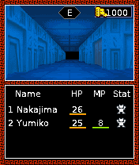

We had a file called a.class that looked ready to satisfy a call to a.a. Looking inside showed a different class name and a different exported method. The palette-replacement helper was there under the wrong identity.MT01
Same algorithm, right link.
We restored the expected class and method names and their internal self-references while keeping the CRC algorithm and original resources. That was a targeted adaptation to the guest classes, which we kept in the record.MT01

The original 176×208 dungeon with Nakajima, Yumiko and the game HUD. Retained desktop guest output, not a phone screenshot.
Open the image for the full original view.
MT90The repaired host route reached the original dungeon, map and command screens. Nokia FullCanvas was a Java ME API extension here; its presence did not make this the Symbian/N-Gage runtime used by the other branch of the collection.MT01MT03
A tap, a save and a parked game.
The original hundred-millisecond update cadence stayed in charge. Input transitions had to survive until the guest could observe them, without creating extra updates for short touchscreen taps.MT02
The game’s own RMS save reopened into the dungeon in a fresh process. We parked the guest when backgrounded and kept reporting independent so it could still answer. The later shell carried those behaviors and the original resources around the helper repair.MT04MT05MT06
About these records
The helper linkage is a documented compatibility modification. Dungeon/map/save evidence comes from the historical Java guest host route, not a phone capture or a claim of combat, negotiation or fusion coverage. The image is retained original-game desktop output. This Nokia API use is distinct from the native Nokia runtime stopgap.
The receipts
Selected source lines, investigation notes and recorded feedback. Open a receipt for the original context and scope.
MT01 / The helper class linkage and original guest identityCheckpoint investigation notes
Source: Megami_Tensei_Bridge_v0.1.1_PRIVATE_CHECKPOINT.zip / Megami_Tensei_Bridge_v0.1.1_PRIVATE/TECHNICAL_FINDINGS.txt · selected lines 1–8
Original supplied JAR SHA256: 2acdfdaec89d5c47b81db7a01002c814524fa07f96486c94bdf97170aa973d98 MIDlet: MyMIDlet. Nokia N7610 target, CLDC 1.0 / MIDP 1.0 plus Nokia FullCanvas/DirectGraphics and MMAPI. Native picture: 176x208. Guest c.run uses a 100 ms update interval; this is preserved. Concrete defect: a.class actually declares p000/C0000a, with CRC method m1a([BII)I. Guest c calls a.a([BII)I during palette replacement. PatchGuest restores the helper class name a and exported method a while remapping internal self references. The CRC algorithm is unchanged. Other bytecode adaptation: Class.getResourceAsStream routes through the app resource loader; caught exceptions are recorded. No game rules, dungeon maps, RNG, stats, enemies or dialogue are rewritten. All 107 non-class original resources remain byte-identical in the APK. Runtime additions for this guest: FullCanvas, Displayable dimensions, serviceRepaints (repaint is synchronous), Font.getFont and software font rendering, Graphics.setFont/drawString, Image.createImage(byte[],int,int), RecordStore.getRecord(int), MediaException. Font metrics and raster glyphs derive from DejaVu Sans small font; fullwidth punctuation selects equivalent Latin glyphs, keeping stored strings intact. The original title logo is an image.
MT90 / Historical image / Digital Devil Story: Megami TenseiHistorical host capture
Source: Megami_Tensei_Bridge_v0.1.1_PRIVATE/evidence/final_02_dungeon.png
Retained historical host output. Original emulator chrome, where present, is part of the unchanged source image. No phone capture or phone performance is inferred.
Unchanged historical image. Source member: Megami_Tensei_Bridge_v0.1.1_PRIVATE/evidence/final_02_dungeon.png SHA-256: 1a964a52927cb67dbc1678c1913cb47749b02e6f743d2777c11ed84adcac9593 The original 176×208 dungeon with Nakajima, Yumiko and the game HUD. Retained desktop guest output, not a phone screenshot. Scope: Historical original Java guest with host graphics backend, retained in v0.1.1.
MT03 / The original dungeon and system save reach the hostHistorical original-guest host verification
Source: Megami_Tensei_Bridge_v0.1.1_PRIVATE_CHECKPOINT.zip / Megami_Tensei_Bridge_v0.1.1_PRIVATE/evidence/FINAL_VERIFICATION.txt · selected lines 1
PASS: original title, dungeon, very short movement tap, map, map toggle, command/system menu, original save, fresh-process reload, background parking, resume and report generation while parked. No runtime faults. Android hardware layout, sound and Downloads export remain device checks. Combat and full campaign not yet exercised.
MT02 / Short taps preserve the original update cadenceCheckpoint investigation notes
Source: Megami_Tensei_Bridge_v0.1.1_PRIVATE_CHECKPOINT.zip / Megami_Tensei_Bridge_v0.1.1_PRIVATE/TECHNICAL_FINDINGS.txt · selected lines 10–18
Input FIFO retains an opposite transition of the same key until the following repaint, ensuring a down/up pair arriving within one 100 ms interval survives an original game update. Touch events do not add game updates. Repaint is bounded and parks when backgrounded, forwarding native hideNotify. Short taps, sustained movement and native pause behavior checked on host. Original RMS store: mega, first record stores original game save bytes. Writes are atomic and durable. Absence on first run is expected and logged separately from runtime faults. No host save is bundled into app storage. Original MMAPI music: sound/0.mid through sound/3.mid; Android MediaPlayer backend preserves requested looping and pauses when backgrounded. Completion callback supplies Long media time (the guest dereferences event data). Audible playback is unobserved. Interface: one gameplay screen, actual launcher icon at upper-left, native aspect ratio, dark/cyan palette, centered directional/confirm controls, secondary map/command/cancel/map-view inputs, two softkeys and SAVE REPORT. Current system bar/cutout/mandatory gesture insets applied once, bars remain visible. Measured content drives control sizing. Layout metrics cached on UI thread for reports. No physical Android layout verification yet. Diagnostics: independent executor, Downloads/Megami Tensei Bridge via MediaStore on API29+, legacy permission on API26-28, pending private fault copy and retry. Samples primitive guest state without invoking/waiting on game worker. Host confirms report generation works while worker is parked; device export remains unobserved.
MT04 / Background parking leaves a report path aliveHistorical original-guest host log
Source: Megami_Tensei_Bridge_v0.1.1_PRIVATE_CHECKPOINT.zip / Megami_Tensei_Bridge_v0.1.1_PRIVATE/evidence/final_acceptance.log · selected lines 8–9, 25–26
SNAP final_08_background frames=122 bY=14 a=4 B=3 bH=176 a5=208 bE=-1 bq=8 aM=8 aK=8 bP=1 bN=0 ad=0 aH=1 aO=0 if=6 c1=true ak=176 aj=101 SNAP final_09_parked frames=122 bY=14 a=4 B=3 bH=176 a5=208 bE=-1 bq=8 aM=8 aK=8 bP=1 bN=0 ad=0 aH=1 aO=0 if=6 c1=true ak=176 aj=101 [... selected excerpt ...] Report generated in 8 ms SNAP final_10_resumed frames=131 bY=9 a=4 B=3 bH=176 a5=208 bE=1 bq=8 aM=8 aK=8 bP=1 bN=0 ad=0 aH=1 aO=0 if=6 c1=true ak=176 aj=101
MT05 / Fresh-process load returns to the original dungeonHistorical original-guest host log
Source: Megami_Tensei_Bridge_v0.1.1_PRIVATE_CHECKPOINT.zip / Megami_Tensei_Bridge_v0.1.1_PRIVATE/evidence/final_reload.log · selected lines 1–8, 15
SNAP final_11_fresh_reload frames=78 bY=1 a=4 B=0 bH=176 a5=208 bE=1 bq=8 aM=8 aK=8 bP=1 bN=0 ad=0 aH=1 aO=0 if=0 c1=true ak=176 aj=101 Megami Tensei Bridge v0.1.1 Original JAR SHA256: 2acdfdaec89d5c47b81db7a01002c814524fa07f96486c94bdf97170aa973d98 MIDP 1.0 / Nokia FullCanvas / original 176x208 game frames=78 lastFrameAgeMs=43 active=true ended=false keys=6 pending=0 resourceReads=30 rmsWrites=0 faults=0 audioStarts=3 original.bY=1 original.a=4 original.B=0 original.bH=176 original.a5=208 original.bE=1 original.c1=true original.ad=0 original.bq=8 original.bP=1 original.bN=0 original.aH=1 [... selected excerpt ...] Report generated in 4 ms
MT06 / The later shell retains controls and records its limitsCheckpoint investigation notes
Source: Megami_Tensei_Bridge_v0.1.1_PRIVATE_CHECKPOINT.zip / Megami_Tensei_Bridge_v0.1.1_PRIVATE/README_FIRST.txt · selected lines 6–22, 30–39
GAMEPLAY UI Actual Wakka Bridge Gameplay UI Kit v1.1.1 is embedded, including its startup fix. Header: original launcher icon, Megami Tensei title, J2ME platform, SAVE REPORT, utilities. Normal controls use a thumb-tracked four-way digital D-pad and separate OK/5 action. MAP/1, CMD/3, VIEW/*, CANCEL/# and both original softkeys remain immediately accessible. ORIGINAL KEYPAD switches the bottom panel inline; D-PAD RETURN restores normal controls. The same live native-aspect game viewport remains attached in both modes. Only keys used by this original game are shown: 1,2,3,4,5,6,8,*,# and both softkeys. Digits 2/4/6/8 replace the equivalent directional inputs; there is no duplicate pad in keypad mode. ORIGINAL ACTIONS ▲ / 2: forward. ▼ / 8: turn around. ◀ / 4 and ▶ / 6: turn left/right. OK / 5: confirm. MAP / 1: map. VIEW / *: original map display toggle. CMD / 3: original command menu. CANCEL / #: return/cancel. MENU: original left softkey. BACK: original right softkey. Android system Back leaves gameplay after stopping the original worker and audio. The on-screen BACK softkey remains an original game input, separate from Android Back. [... selected excerpt ...] VERIFIED Original title/dungeon, short taps, map/toggle, command/system menus, save/fresh-process load, background parking/resume and report generation while the worker is parked pass the host suite. Four Android API34 framework integration tests pass: cold production Activity/window startup, insets/drawing/stable inline switching, physical input ownership/Back cleanup, startup fault capture, and original JAR execution through the production Activity/Engine with real worker shutdown. The live-game Android test shadows MediaPlayer audio; it does not establish audible sound. 50 game-specific device/density/orientation geometry cases pass. Native resources (107) are unchanged. Physical-device comfort, live sound, phone safe areas and Downloads export remain unobserved. Combat, negotiation, fusion and full campaign completion have not been exercised.